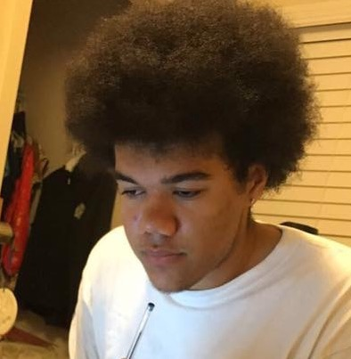

About Me

BIO
Pursuing a B.S. in Computer Science at Harvey Mudd College with a focus in Robotics and Sound Design. Experienced in both software and hardware. I've done research with computer vision, robotics, and image classification. Always looking for something new to learn, a passionate self learner, and always eager to put forth my best effort.
Coursework
In Progress:
- Algorithms
- Software Development
- Logic and Computability
Completed:
- Data Structures and Program Development
- Discrete Mathematics
- Principles of Computer Science
Skills
Languages:
- Python
- C/C++
- Java
- HTML/CSS/JavaScript
- Golang
- System Verilog
Tools:
- Visual Studio/VS Code
- Fusion360
- Eclipse
Experience
RC's to Robots
Using Monte Carlo and Computer Vision for automatic robot localization.
CS Insights
CS for world domination
CS Clinic
Developed Web Application seed systems and Machine Learning pipelines for students to incorporate into future Clinic projects